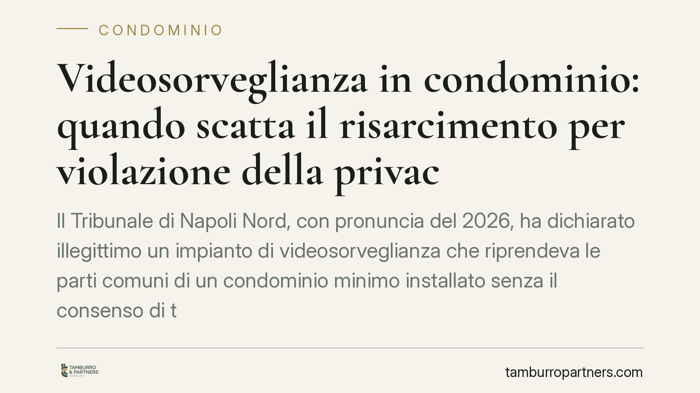

Videosorveglianza in condominio: quando scatta il risarcimento per violazione della privacy
Il Tribunale di Napoli Nord, con pronuncia del 2026, ha dichiarato illegittimo un impianto di videosorveglianza che riprendeva le parti comuni di un condominio minimo installato senza il consenso di tutti i partecipanti. Rimozione ordinata con penale giornaliera e risarcimento del danno non patrimoniale per lesione della riservatezza. Una decisione che chiarisce i limiti tra tutela della sicurezza e diritto alla privacy.

Il caso
Un impianto di videosorveglianza installato in un condominio composto da due soli partecipanti (il cosiddetto "condominio minimo") riprendeva porzioni delle parti comuni. Uno dei condomini non aveva prestato il proprio consenso all'installazione.
Il Tribunale di Napoli Nord, con pronuncia del settembre 2026, ha ritenuto illegittimo l'impianto e ne ha ordinato la rimozione. Alla condanna ha aggiunto una penale per ogni giorno di ritardo nell'esecuzione (astreinte) e il risarcimento del danno non patrimoniale in favore del condomino leso.
Inquadramento normativo
La disciplina delle riprese sulle parti comuni è dettata dall'art. 1122-ter c.c. La norma consente all'assemblea di deliberare l'installazione di impianti di videosorveglianza sulle parti comuni, ma richiede la maggioranza qualificata prevista dall'art. 1136, secondo comma, c.c.: un numero di voti che rappresenti la maggioranza degli intervenuti e almeno la metà del valore dell'edificio (500 millesimi).
Occorre però distinguere. Una cosa è la telecamera privata che il singolo condomino orienta esclusivamente sulla propria porta d'ingresso o sul proprio spazio esclusivo: in questo caso non serve alcuna delibera. Altra cosa è la ripresa che investe le parti comuni o gli spazi altrui, che ricade nella disciplina assembleare e nel Regolamento UE 2016/679 (GDPR) in tema di trattamento dei dati personali.
Nel condominio minimo la questione si complica. Secondo la giurisprudenza di legittimità, quando i partecipanti sono due il metodo collegiale resta applicabile, ma in assenza di una maggioranza formabile la decisione richiede il consenso di entrambi. Un impianto imposto dal singolo, senza l'accordo dell'altro partecipante, è dunque illegittimo.
Il risarcimento del danno non patrimoniale trova fondamento nell'art. 2059 c.c., letto in combinato con la lesione del diritto alla riservatezza, bene di rango costituzionale.
Le implicazioni pratiche
La pronuncia conferma alcuni punti fermi per chi vive o amministra un condominio.
Primo: l'installazione di telecamere sulle parti comuni non è una scelta libera del singolo. Richiede una delibera assembleare valida o, nel condominio minimo, l'accordo di tutti i partecipanti.
Secondo: la violazione non produce soltanto l'obbligo di rimozione. Può generare una condanna al risarcimento, anche in assenza di un danno patrimoniale dimostrato, quando è provata la lesione della riservatezza.
Terzo: lo strumento dell'astreinte ex art. 614-bis c.p.c. rafforza l'ordine di rimozione. Si tratta di una misura di coercizione indiretta: il giudice fissa una somma dovuta per ogni giorno di ritardo nell'adempimento, così da spingere l'obbligato a eseguire un obbligo di fare o disfare che, per sua natura, non è surrogabile da terzi (obbligo infungibile).
Cosa fare in concreto
- Verifica la delibera. Prima di installare telecamere sulle parti comuni, accertati che esista una delibera assembleare approvata con la maggioranza dell'art. 1136, secondo comma, c.c. Nel condominio minimo, procurati il consenso scritto dell'altro partecipante.
- Limita l'inquadratura. Se la telecamera è privata, orientala esclusivamente sul tuo spazio o sulla tua porta. Evita di riprendere aree comuni, ingressi altrui o suolo pubblico.
- Adempi agli obblighi GDPR. Esponi la cartellonistica informativa, definisci i tempi di conservazione delle immagini e individua chi può accedervi.
- Documenta il dissenso. Se subisci una ripresa illegittima, formalizza per iscritto la tua opposizione e conserva prove della portata dell'inquadratura (fotografie, verbali).
- Valuta la tutela giudiziale. Quando la rimozione spontanea non arriva, l'azione può includere la richiesta di astreinte e del risarcimento del danno non patrimoniale.
Una precisazione di metodo. Al momento della redazione non è stato possibile verificare gli estremi completi di pubblicazione della pronuncia richiamata. I principi qui esposti riflettono orientamenti consolidati in materia e restano validi a prescindere dal singolo provvedimento. Consigliamo comunque, in caso di controversia, una verifica puntuale della giurisprudenza aggiornata sul caso concreto.
---
Contributo informativo a cura di Tamburro & Partners Avvocati. Non costituisce parere legale.
Ogni condominio ha una storia a sé.
Se gestisci un'amministrazione e vuoi un confronto su una specifica questione condominiale, scrivi allo studio. Ti rispondiamo entro un giorno lavorativo.